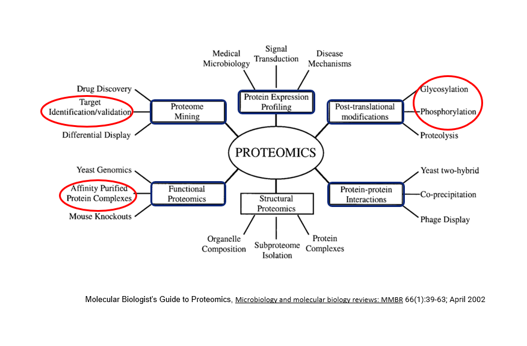

Proteomics Meets Artificial Intelligence!

Hi, I’m Santosh D. Bhosale, a pharmacist by training who has evolved from hands-on mass spectrometry-based proteomics research to leading AI-driven drug discovery initiatives.
My journey began with exploring the properties of biologically important proteins using mass spectrometry-based proteomics technologies. I worked on qualitative and quantitative protein measurements, post-translational modifications, and protein-protein interactions using various computational methods to understand proteome complexity.
Now, I’m leveraging this scientific foundation to lead the development of biomarker modules for omics research, integrating AI/ML approaches to accelerate pharmaceutical innovation and drug discovery processes.

Accelerating Drug Discovery
with AI & ML
Transforming proteomics expertise into AI-powered drug discovery solutions. Currently leading biomarker module development for omics research, integrating LLM technologies and data science to bridge computational biology with pharmaceutical innovation.